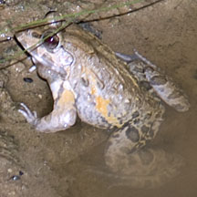
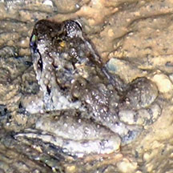
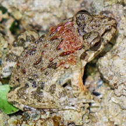

|
|
| vertebrates text index | photo index |
| Phylum Chordata > Subphylum Vertebrata > Class Amphibia |
| Crab-eating
frog Fejervarya crancrivora Family Dicroglossidae updated Dec 2020 Where seen? This 'machine-gun' frog is more often heard than seen. It is common in the back mangroves as well as scrubby areas, disturbed forests and even parks. It is also found on some of our offshore islands. More active at night and after rain. It was formerly known as Rana crancrivora. Features: It has a loud rattling call that reminds of the 'rat-a-tat-tat-tat' of a machine gun (here's a sound clip of the call by the Herpetological Society of Singapore). Total length to 8cm. A stout frog with long muscular back legs which have webbed toes. It has ridges on its back. It is greyish brown with irregular blackish blotches and a slanting yellowish stripe on the sides. Adult males have a white throat with dark grey patches at the corners of the jaw. |
 Pasir Ris Park, Mar 12 |
 Admiralty Park, Dec 25 Photo shared by Rui Quan Oh on facebook. |
 Pasir Ris Park, Dec 25 Photo shared by Rui Quan Oh on facebook. |
| What
does it eat? It can tolerate brackish water and is a carnivore.
As its common name suggests, it does eat crabs! Baby frogs: Tadpoles are large (3cm) and often seen in shallow pools in the back mangroves as well as drains. |
| Crab-eating frogs on Singapore shores |
On wildsingapore
flickr
|
|
Links
References
|